FAVORITOS
FerTemaj


| 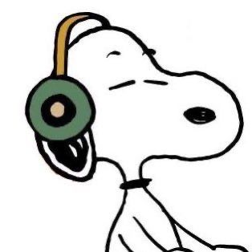 | 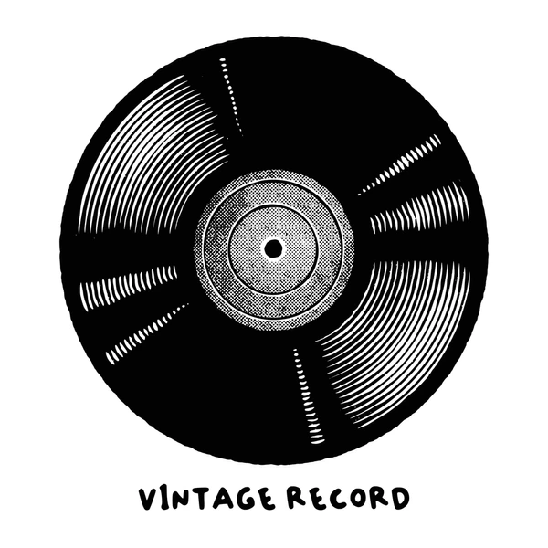 | |||
| Cantantes famosos | Canción Favorita | Álbum | Conciertos | |
|---|---|---|---|---|
| 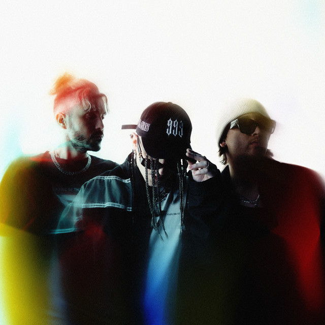 | Chase Atlantic es una banda australiana que mezcla R&B, pop alternativo y música electrónica, conocida por su estilo atmosférico y letras introspectivas. | 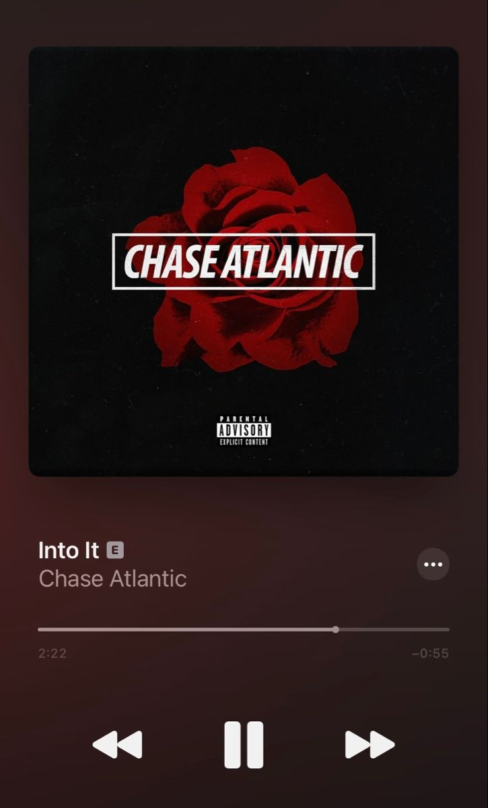 | |
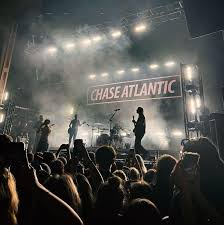 |
|
Chris Grey es un artista emergente con un sonido único que fusiona pop, soul y electrónica, destacando por su voz distintiva y producción moderna. | 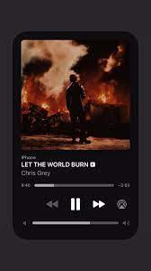 | 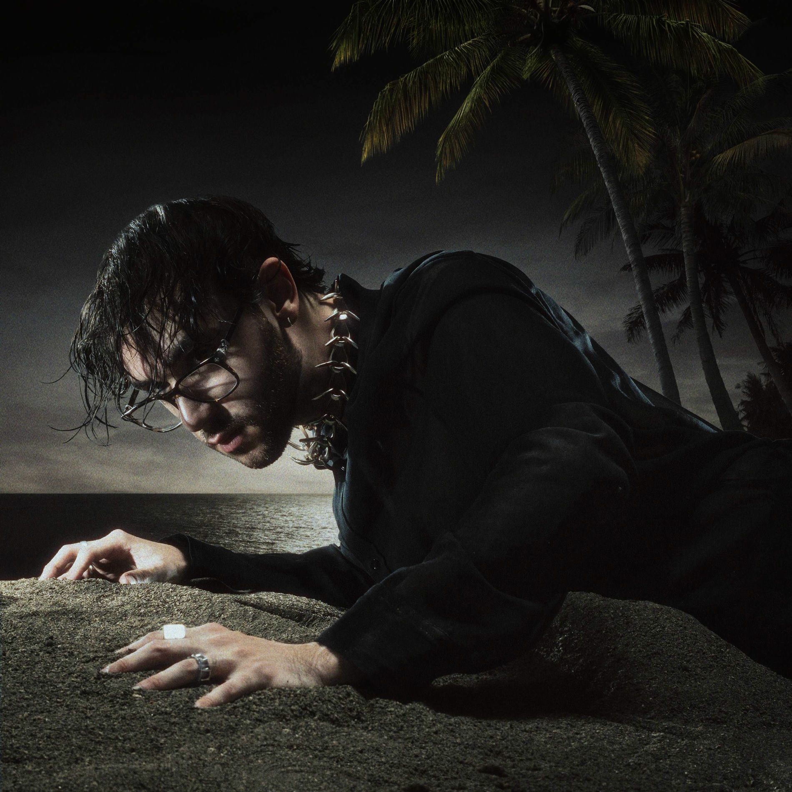 | |
|
Enhypen es un grupo surcoreano formado en 2020, reconocido por su energía, coreografías impecables y temas que mezclan pop, hip-hop y electrónica. | 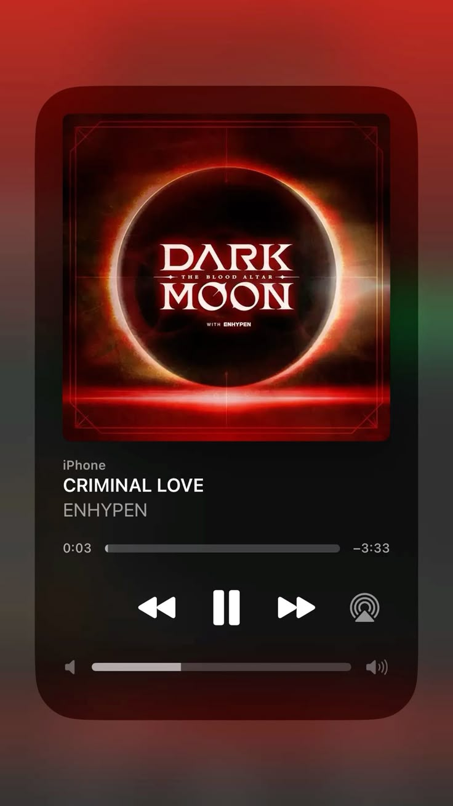 | 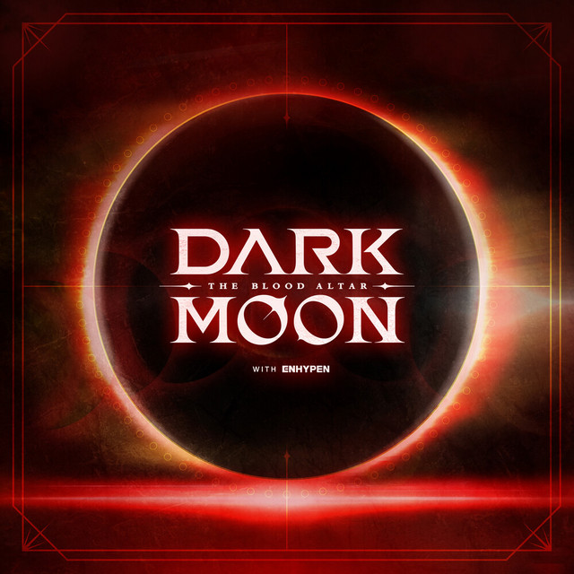 | 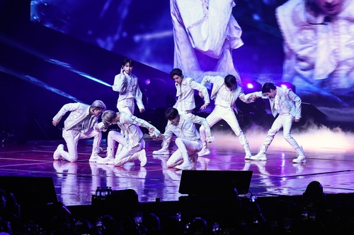 |
|
Stray Kids es un grupo de K-pop conocido por su energía intensa, letras honestas y producción musical autodidacta. Han ganado reconocimiento global por su autenticidad. | 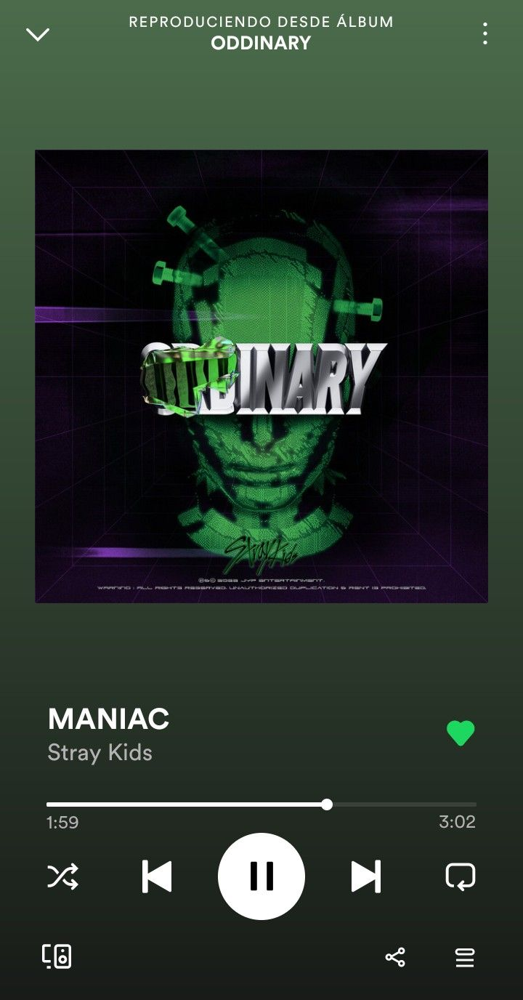 | |
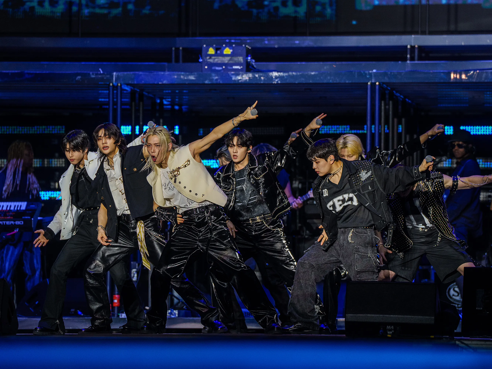 |